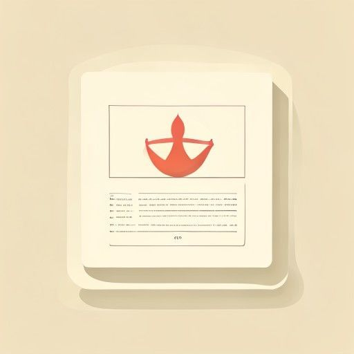
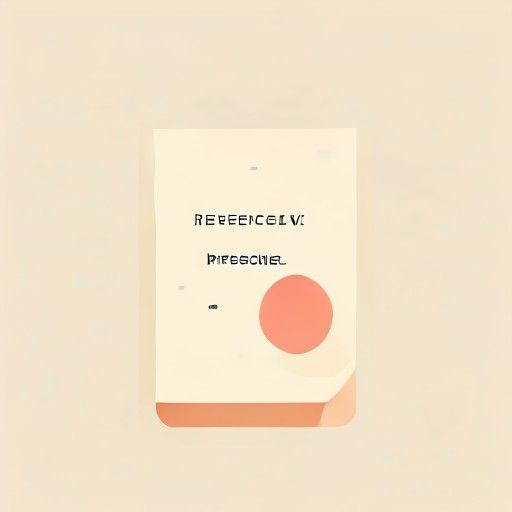
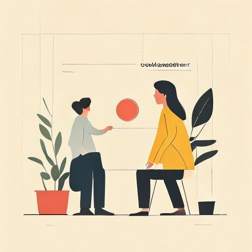

waiver
the giving up of a legal right, often in writing.
S1E10 — "They signed a conflict of interest waiver."
what lawyers ask clients to sign whenever a potential issue must be acknowledged in advance — common procedural step.
4 advanced (C1/C2) words and phrases. Hover a card for emphasis. Open in any modern browser.

the giving up of a legal right, often in writing.
S1E10 — "They signed a conflict of interest waiver."
what lawyers ask clients to sign whenever a potential issue must be acknowledged in advance — common procedural step.
an earlier event or legal decision that serves as a guide for future cases.
S1E10 — "I want you to find legal precedent that will allow us to subpoena those records."
the backbone of common-law legal argument — Mike's research is almost always a hunt for precedent.

unable to be changed, reversed, or undone.
S1E10 — "Such appointment is irrevocable and shall be deemed a power coupled with…"
boilerplate contract language that signals a permanent commitment — recognising it stops you skimming over key clauses.

a situation where someone's personal interests could compromise their professional duties.
S1E10 — "They signed a conflict of interest waiver."
the ethical line every lawyer must check before taking a case — central to the firm's risk management.